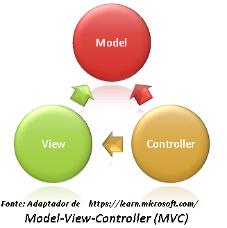
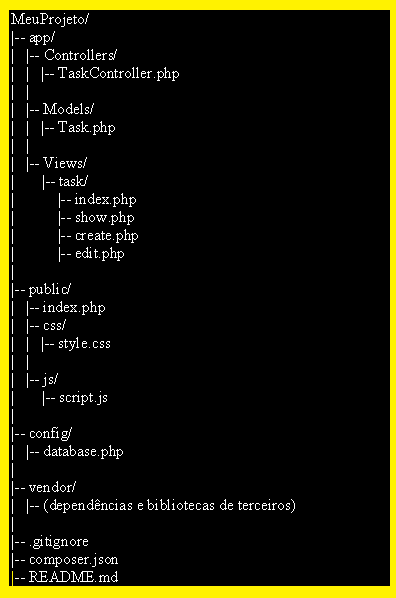

Abordaremos algumas dicas sobre a linguagem PHP e também sobre MVC.
O objetivo dessas dicas tem como foco assuntos interessantes que poderão levá-lo(a) a uma jornada de conhecimento.
Curioso? Vamos lá?
O que é PHP
O PHP (Hypertext Preprocessor) é uma linguagem de script de código aberto, especialmente adequada para o desenvolvimento web.
Ela é frequentemente incorporada em HTML para adicionar funcionalidades dinâmicas a páginas da web.
PHP é uma linguagem de servidor, o que significa que o código é executado no servidor web, gerando HTML que é então enviado para o navegador do usuário
O PHP É uma linguagem de programação versátil, de código aberto (gratuíto), tendo como principais características e usos:
✱ Desenvolvimento Web: PHP é amplamente utilizado para criar aplicativos web dinâmicos. Ele pode ser incorporado diretamente no código HTML ou usado em conjunto com outras tecnologias web;
✱ Manipulação de Formulários: PHP é eficaz no processamento de dados de formulários HTML. Ele pode receber dados do usuário, processá-los e enviar resultados de volta ao navegador;
✱ Conexão com Bancos de Dados: PHP oferece suporte a uma variedade de bancos de dados, como MySQL, PostgreSQL, SQLite, entre outros. Isso permite que você crie aplicações web que interagem com bancos de dados para armazenar e recuperar informações;
✱ Controle de Sessão e Cookies: PHP facilita a implementação de recursos de controle de sessão e o uso de cookies para rastrear informações do usuário entre as solicitações;
✱Manipulação de Arquivos: PHP fornece funções para manipular arquivos no servidor, como leitura, gravação, exclusão e upload de arquivos;
✱ Criação de APIs: (Interface de Programação de Aplicações) Pode ser usado para desenvolver APIs que permitem a comunicação entre diferentes sistemas;
✱ Frameworks Web: Existem vários frameworks PHP, como Laravel, Symfony e CodeIgniter, que facilitam o desenvolvimento de aplicativos web escaláveis e organizados seguindo o padrão MVC;
✱ Geração de Conteúdo Dinâmico: PHP é frequentemente usado para criar páginas web dinâmicas, onde o conteúdo pode ser personalizado com base em variáveis, dados do usuário ou outras condições.
Projetada e tem capacidade de se misturar com HTML (HyperText Markup Language), tornando-o bastante intuitivo para se desenvolver para web. O PHP é interpretado no servidor e envia para o cliente apenas a resposta (seja HTML, XML, JSON etc).
Em resumo, PHP é uma linguagem versátil e popular para o desenvolvimento web, oferecendo ferramentas poderosas para criar uma ampla variedade de aplicativos dinâmicos e interativos.
Muito interessante não é? Quer saber detalhes?
Então continue lendo...
MVC

O MVC (Model-View-Controller) é um padrão arquitetural de design utilizado no desenvolvimento de software.
Ele divide uma aplicação em três componentes principais:
✱ Model (Modelo): Encarregada da apresentação e exibição da interface do usuário. Recebe dados do Modelo e os apresenta de forma compreensível;
✱ View (Visão): PHP é eficaz no processamento de dados de formulários HTML. Ele pode receber dados do usuário, processá-los e enviar resultados de volta ao navegador;
✱ Controller (Controlador): Gerencia a entrada do usuário, traduzindo-a em comandos para o Modelo ou a Visão. Responde às ações do usuário e atualiza o Modelo conforme necessário.
A separação dessas responsabilidades facilita a manutenção, escalabilidade e reutilização de código em aplicações, promovendo uma estrutura organizada e modular.
O MVC é amplamente utilizado em desenvolvimento web e aplicações GUI (Interface Gráfica do Usuário).
Em resumo, PHP é uma linguagem versátil e popular para o desenvolvimento web, oferecendo ferramentas poderosas para criar uma ampla variedade de aplicativos dinâmicos e interativos.
Agora você irá aprender alguns detalhes.
Vamos lá?
Ferramentas Utilizadas
Agora você saberá além da arquitetura, as ferramentas utilizadas no MVC.
Vamos abordar as ferramentas para a elaboração e como elas se encaixam na construção de um aplicativo usando o padrão MVC (Model-View-Controller) com PHP.
✱ Função: O VSCode é um ambiente de desenvolvimento integrado (IDE) popular e poderoso. Ele fornece recursos avançados de edição de código, depuração, controle de versão e integração com várias linguagens de programação, incluindo PHP.
✱ Uso no MVC: O VSCode é uma escolha comum entre os desenvolvedores PHP devido à sua extensibilidade. Você pode instalar extensões específicas para PHP, como "PHP IntelliSense" e "PHP Debug", que facilitam a escrita de código, fornecem sugestões e oferecem suporte à depuração.
✱ Função: XAMPP é um pacote que inclui Apache (servidor web), MySQL (banco de dados), PHP e Perl. Ele simplifica a configuração de um ambiente de desenvolvimento local para facilitar o desenvolvimento de aplicativos web.
✱ Uso no MVC: Um servidor web, como o Apache fornecido pelo XAMPP, é essencial para executar e testar aplicativos PHP localmente. O Apache lida com as solicitações HTTP e executa scripts PHP, permitindo que você teste e depure seu código antes de implantá-lo em um ambiente de produção.
✱ Função: Navegadores, como Chrome, Firefox, ou Edge, são usados para visualizar e interagir com aplicativos web. Eles interpretam o HTML, CSS e JavaScript gerados pelo servidor, exibindo a interface do usuário e permitindo a interação do usuário.
✱ Uso no MVC: Os navegadores são a interface final para os usuários. O MVC no contexto web divide a aplicação em três componentes principais: Model (lógica de negócios e acesso a dados), View (apresentação e interface do usuário) e Controller (gerenciamento de solicitações e interação entre Model e View). O PHP, no lado do servidor, é frequentemente usado para implementar o Controller e o Model, enquanto a View é geralmente composta de HTML, CSS e, às vezes, JavaScript. O navegador exibe a View e interage com o Controller por meio de solicitações HTTP.
O MySQL Workbench é uma ferramenta gráfica popular para administrar bancos de dados MySQL, mas sua utilização não está diretamente relacionada ao padrão MVC (Model-View-Controller). O MVC é um padrão arquitetural de design que separa a lógica de negócios (Model), a apresentação (View) e o controle (Controller) em uma aplicação.
No contexto do desenvolvimento web com PHP e MySQL, o MySQL Workbench pode ser utilizado para tarefas relacionadas ao banco de dados, como criar, modificar e gerenciar tabelas, executar consultas SQL, e realizar outras operações administrativas.
Aqui está como o MySQL Workbench pode se relacionar com o desenvolvimento web e o padrão MVC:
MODEL (Modelo):
✱ Uso no MVC: Os navegadores são a interface final para os usuários. O MVC no contexto web divide a aplicação em três componentes principais: Model (lógica de negócios e acesso a dados), View (apresentação e interface do usuário) e Controller (gerenciamento de solicitações e interação entre Model e View). O PHP, no lado do servidor, é frequentemente usado para implementar o Controller e o Model, enquanto a View é geralmente composta de HTML, CSS e, às vezes, JavaScript. O navegador exibe a View e interage com o Controller por meio de solicitações HTTP.
CONTROLLER (Controlador):
✱ O Controller, na lógica do PHP, pode interagir com o banco de dados para realizar operações como inserção, atualização, exclusão e recuperação de dados. O MySQL Workbench não está diretamente envolvido nessa parte, mas pode ser usado para entender e verificar os dados diretamente no banco de dados.
VIEW (Visão):
✱ A View, geralmente composta por arquivos HTML e PHP, exibe dados obtidos do Model. A interação com o banco de dados é geralmente tratada pelo Controller. O MySQL Workbench não está diretamente envolvido na criação da View.
IMPORTANTE: Você poderá fazer download de todos programas listados acima, antes você deve identificar qual o seu Sistema Operacional em uso(Windows, Linux/Unix, MacOS ou outro), se é 32 ou 64 bits. Escolher a versão compatível com seu sistema e fazer download da versão. As instalações são intuitivas e de fácil execução bem como todos os Softwares são "Livres".
Segundo a Free Software Foundation (Fundação para o Software Livre), é considerado livre qualquer programa que pode ser copiado, usado, modificado e redistribuído de acordo com as necessidades de cada usuário.
No desenvolvimento PHP com o padrão MVC, o Controller recebe solicitações do navegador, interage com o Model para obter ou modificar dados e atualiza a View para refletir essas alterações. Ferramentas como o VSCode, servidores web como o XAMPP e navegadores são essenciais para um fluxo de trabalho eficiente durante o desenvolvimento e teste de aplicativos web em PHP. Utilizamos o MySQL Workbench para tarefas relacionadas ao banco de dados (particularmente MySQL), a sua utilização não está diretamente vinculada à implementação do padrão MVC. Ele é mais frequentemente usado na fase de modelagem e administração do banco de dados, enquanto a implementação do MVC em PHP ocorre no código PHP, muitas vezes utilizando a extensão MySQLi ou PDO para interagir com o banco de dados a partir do código.
"Agora que compeendeu o PHP, compreenderá como são as arquiteturas do MVC."
Arquitetura do MVC
(organização e hierarquia)
A organização de pastas (hierarquia) em um projeto MVC em PHP pode variar de acordo com as preferências da equipe ou as convenções adotadas pelo framework utilizado (se houver). Vou fornecer um exemplo simples sem a inclusão de um framework, onde as pastas são organizadas manualmente..
Suponha que você tenha um projeto chamado "MeuProjeto" e está construindo um sistema de gerenciamento de tarefas. Aqui está uma possível hierarquia de pastas:

MVC Arquitetura
Aqui está uma breve descrição de cada pasta:
✱ app/: Contém a lógica da aplicação seguindo o padrão MVC. Controllers/: Armazena os controladores responsáveis por gerenciar as solicitações do usuário e interagir com o modelo e a visão. TaskController.php: Exemplo de um controlador para manipular tarefas. Models/:
as classes que representam a lógica de negócios e a interação com o banco de dados. Task.php: Exemplo de um modelo que representa uma tarefa. Views/: Contém os arquivos de interface do usuário (HTML, PHP). task/: Organiza as visualizações relacionadas a tarefas. index.php: Página de listagem de tarefas. show.php: Página de exibição detalhada de uma tarefa. create.php: Página de criação de uma nova tarefa. edit.php: Página de edição de uma tarefa existente.
✱ public/: Contém os arquivos públicos acessíveis diretamente pelo navegador. index.php: Ponto de entrada da aplicação. css/: Estilos CSS. style.css: Arquivo de estilo principal. js/: Scripts JavaScript. script.js: Arquivo de script principal.
✱ config/: Configurações da aplicação. database.php Configurações de conexão com o banco de dados.
✱ vendor/: Pasta para armazenar dependências e bibliotecas de terceiros (pode ser gerada pelo Composer).
✱ .gitignore: Lista de arquivos e pastas a serem ignorados pelo controle de versão Git.
✱ composer.json: Arquivo de configuração do Composer para gerenciar as dependências do projeto.
✱ README.md: Documentação do projeto.
OBSERVAÇÕES: Este é apenas um exemplo básico. Em projetos maiores, você pode considerar a utilização de namespaces, autoloaders e outras práticas recomendadas para organizar o código de forma mais eficiente. Além disso, ao usar frameworks como Laravel, Symfony ou CodeIgniter, a estrutura de pastas pode ser significativamente diferente, seguindo as convenções desses frameworks.
CONVENÇÕES
(formas e nomenclaturas)
As convenções de codificação são conjuntos de diretrizes para cada linguagem de programação específica com recomendações sobre diferentes aspectos do desenvolvimento de software nessa linguagem, incluindo estilo de codificação, melhores práticas e métodos.
O CamelCase: é uma convenção de nomenclatura utilizada em programação para compor palavras ou frases em que cada palavra começa com uma letra maiúscula, sem espaços ou pontuações entre elas. O nome "CamelCase" deriva do fato de que as letras maiúsculas no meio das palavras se assemelham às corcovas de um camelo.
Existem duas formas principais de CamelCase:
Upper Camel Case (Pascal Case):.
A primeira letra de cada palavra é maiúscula, incluindo a primeira palavra.
Exemplo: UpperCamelCase, NomeDaClasse, FuncaoDeExemplo.
Lower Camel Case:.
• A primeira letra da primeira palavra é minúscula, e as primeiras letras subsequentes de cada palavra são maiúsculas..
lowerCamelCase, nomeDaVariavel, funcaoDeExemplo.
O CamelCase é frequentemente utilizado em várias linguagens de programação, incluindo PHP, JavaScript, Java, C#, e outras. Algumas das razões para usar o CamelCase incluem:
▷ Legibilidade:
O CamelCase pode melhorar a legibilidade do código, especialmente em casos em que o nome da variável ou método é composto por várias palavras.
▷ Padrão da Indústria:
Muitos padrões e diretrizes de codificação em diferentes comunidades de desenvolvimento adotam o CamelCase como uma prática comum.
▷ Convenção em Frameworks:
Muitos frameworks e bibliotecas em diversas linguagens adotam o CamelCase para consistência em seus métodos, classes e variáveis.
As convenções para dar nomes a pastas, classes, controllers, views e models podem variar dependendo do framework que você está utilizando ou das práticas adotadas em sua equipe de desenvolvimento. No entanto, existem algumas convenções comuns que são frequentemente seguidas, especialmente em frameworks populares como Laravel, Symfony, CodeIgniter, entre outros. Aqui estão algumas sugestões de convenções:
✱ Pastas:
Controllers:
Muitas vezes, a pasta de controladores é chamada de "Controllers" ou "Controller".
Os nomes dos controladores muitas vezes são no plural, refletindo a ideia de gerenciamento de um conjunto de entidades.
Exemplo: UsersController, TasksController.
Models:
A pasta de modelos pode ser chamada de "Models" ou "Model".
Os nomes dos modelos frequentemente representam uma entidade singular e podem estar no singular.
Exemplo: User, Task.
Views:
A pasta de visualizações pode ser chamada de "Views" ou "View".
Os nomes dos arquivos de visualização podem refletir a ação ou recurso, muitas vezes no singular.
Exemplo: user/index.php, task/show.php.
Composição:
app/
|-- Controllers
|-- Models/
|-- Views/
✱ Classes:
Controllers:
Os controladores geralmente têm nomes que refletem a entidade ou recurso que estão manipulando, seguido do termo "Controller".
Os nomes dos controladores muitas vezes são no plural, refletindo a ideia de gerenciamento de um conjunto de entidades.
Exemplo:
// Nome do arquivo: Task.php
class Task {
// ...
}
Models:
Os modelos geralmente têm nomes que representam a entidade de dados que estão manipulando.
Exemplo:
// Nome do arquivo: Task.php
class TaskController {
// ...
}
✱ Views:
O nome dos arquivos de visualização geralmente reflete a ação ou propósito da visualização. Por exemplo, para um controlador chamado TaskController, você pode ter arquivos como index.php, show.php, create.php, edit.php, etc., na pasta Views/Task/.
✱ Controllers e Actions (Métodos dos Controllers):
Os métodos em um controlador muitas vezes têm nomes que refletem as ações que estão realizando. Por exemplo, para um controlador de tarefas (TaskController), você pode ter métodos como index(), show(), create(), edit(), etc.
class TaskController {
public function index() {
// ...
}
public function show() {
// ...
}
public function create() {
// ...
}
public function edit() {
// ...
}
}
Essas são apenas convenções comuns e não regras estritas. Ao trabalhar com um framework específico, é sempre uma boa prática consultar a documentação do framework para entender as convenções específicas que ele adota. Além disso, a consistência dentro de sua equipe de desenvolvimento é fundamental, independentemente das convenções específicas escolhidas.
CONSIDERAÇÕES:
Além do CamelCase, existem outras convenções de nomenclatura comumente utilizadas em PHP e no desenvolvimento em geral.
Aqui estão algumas delas:
Snake Case:
Todas as palavras são minúsculas, e espaços entre palavras são substituídos por underscores.
Exemplo: nome_do_metodo, variavel_nomeada, nome_da_funcao.
Kebab Case (ou Hyphen Case)
Semelhante ao Snake Case, mas com hífens em vez de underscores.
Exemplo: nome-do-metodo, variavel-nomeada, nome-da-funcao.
Pascal Case (ou Upper Camel Case):
Semelhante ao Camel Case, mas o primeiro caractere também é maiúsculo.
Exemplo: NomeDoMetodo, ClassePrincipal, NomeDaFuncao.
Screaming Snake Case (ou Constant Case):
Todas as letras são maiúsculas, e espaços entre palavras são substituídos por underscores.
Exemplo: NOME_DA_CONSTANTE, VALOR_MAXIMO, CONFIGURACAO_PADRAO.
Hungarian Notation:
Prefixa o nome da variável com um ou mais caracteres indicando o tipo ou propriedade da variável.
Exemplo: strNome, intIdade, boolAtivo.
Lisp Case:
Semelhante ao Kebab Case, mas usa apenas letras minúsculas.
Exemplo: nome-da-funcao, variavel-de-exemplo.
Cada convenção tem suas próprias vantagens e é escolhida com base nas preferências da equipe ou nas diretrizes do projeto. A consistência é fundamental para facilitar a leitura e manutenção do código. Em muitos projetos e frameworks PHP, Camel Case e Snake Case são amplamente adotados para nomes de classes e métodos, enquanto Snake Case é comumente usado para nomes de variáveis e colunas de banco de dados.
Elementos das Linguagens de Programação
As linguagens de programação têm vários elementos que permitem a criação de algoritmos e programas.
Quer saber como são?
Abaixo listamos os elementos:
✅ Sintaxe: é a forma como as instruções e expressões são escritas na linguagem (estrutura, pontuação e regras);
✅ Semântica: é o significado das instruções e expressões em um programa e como se relacionam com o mundo real e com outras instruções do programa;
✅ Tipos de dados: são as diferentes categorias de dados que podem ser usadas em um programa, como números, texto, booleanos, entre outros;
✅ Variáveis: são os nomes que se atribuem aos valores de dados em um programa, permitindo que eles sejam referenciados e manipulados ao longo da execução do programa;
✅ Estruturas de controle: são as instruções que controlam o fluxo de execução do programa, como condicionais (if-else), loops (for, while) e chamadas de função;
✅ Bibliotecas e frameworks (Lexis): são conjuntos de código pré-existente que podem ser usados em programas para realizar tarefas específicas, como processamento de imagens, manipulação de dados, construção de interfaces gráficas, entre outras.
OBS: Todos esses elementos são combinados de diferentes maneiras em cada linguagem, mas permitem que os programadores expressem soluções de problemas de forma estruturada.
Compilação e Interpretação
Numa explicação de poucas palavras, PHP é uma linguagem de programação utilizada por programadores e desenvolvedores para construir sites dinâmicos, extensões de integração de aplicações e agilizar no desenvolvimento de um sistema.
Existem quatro itens importantes na composição das linguagens de programação:
❶ A ordem alfabética para escrita (com script reconhecível);
❷ O domínio do dicionário léxico da linguagem;
❸ A obediência às regras sintáticas da linguagem;
❹ Coerência semântica do programa (o programa tem de fazer sentido).
Como aprender a usar o PHP?
Algumas das principais características do PHP incluem sua simplicidade, suporte para vários bancos de dados, ampla documentação e uma grande comunidade de desenvolvedores ativos.
Entre os principais recursos, estão:
▷ Interpretação do lado do servidor: O PHP é executado no servidor, o que significa que o código é processado no servidor antes que o resultado seja enviado para o navegador do usuário.
▷ Suporte para bancos de dados: essa linguagem oferece suporte para uma ampla variedade de bancos de dados, incluindo MySQL, PostgreSQL e SQLite.
▷ Facilidade de uso: mesmo para iniciantes em programação.
▷ Compatibilidade com outras tecnologias: O PHP é compatível com várias outras tecnologias de web, incluindo HTML, CSS e JavaScript.
▷ Ampla documentação: possui uma documentação abrangente e atualizada regularmente, o que facilita o aprendizado e o desenvolvimento.
▷ Grande comunidade: O PHP possui um grande grupo de desenvolvedores ativos, que fornecem suporte e recursos para outros desenvolvedores.
Você pode pesquisar na Web, fazer cursos em plataformas gratuítas e participar de comunidades.